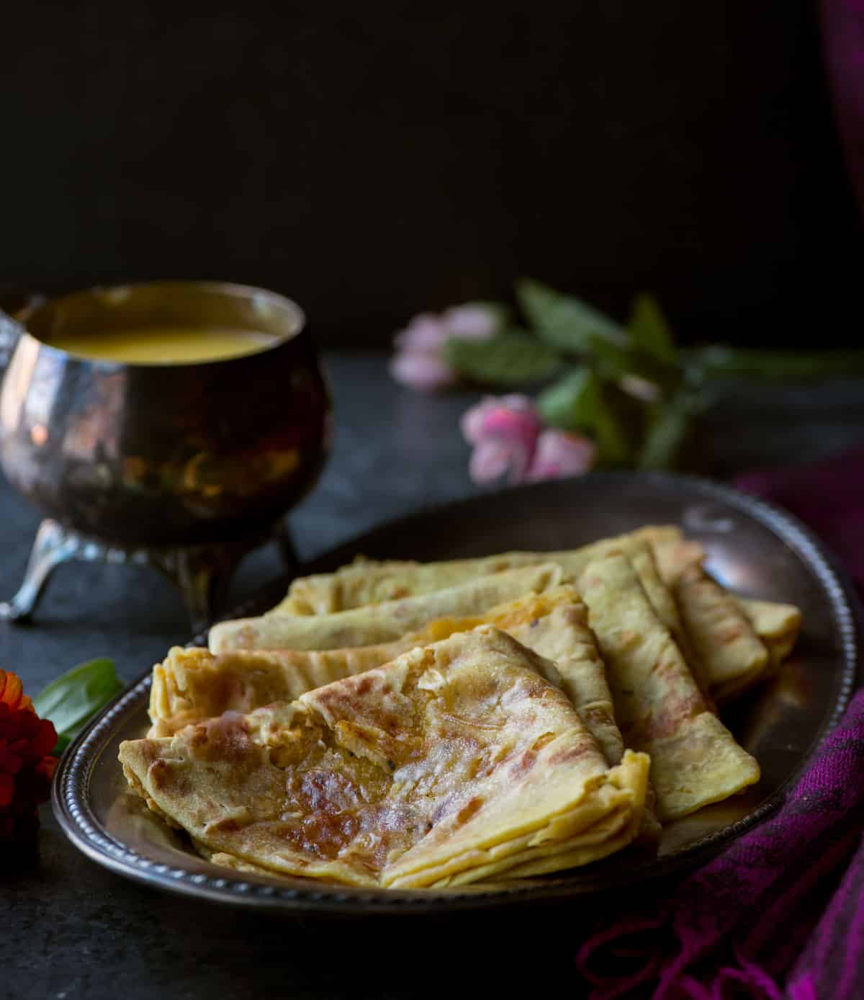

Ingredients for Puran Poli 🍞
- 1 cup Chana Dal (split chickpeas) 🌾
- 1/2 cup Jaggery (grated) 🍯
- 1/2 tsp Cardamom Powder 🌿
- 1/4 tsp Nutmeg Powder (optional) 🌰
- A pinch of Saffron strands (optional) 🌼
- 1 tbsp Ghee (clarified butter) 🧈
- 1 1/2 cups Whole Wheat Flour 🌾
- 1/4 tsp Turmeric Powder ✨
- 1/4 tsp Salt 🧂
- Water (as required) 💧
- Ghee for frying 🧈
Steps 🍴
- Wash the **chana dal** thoroughly and pressure cook it with enough water for 3-4 whistles, or until soft. Drain the excess water and set the dal aside. 🌾💧
- In a pan, add the cooked dal, grated **jaggery**, cardamom powder, nutmeg powder (if using), and a pinch of saffron. Cook on medium heat, stirring frequently until the jaggery melts and mixes well with the dal. 🍯🌿🌼
- Keep cooking the mixture until it thickens and the moisture evaporates. Stir occasionally to prevent it from sticking to the pan. Once it becomes a thick, dry paste, remove from heat. Let it cool down to room temperature. 🍯🔥
- In a mixing bowl, combine the **whole wheat flour**, turmeric powder, and salt. Add water little by little to form a smooth, soft dough. The dough should not be too sticky or too hard. 💧✨
- Knead the dough well for 5-6 minutes until it is smooth and elastic. Cover with a damp cloth and let it rest for 20-30 minutes. 🧑🍳💧
- Once the dal mixture (puran) and dough are ready, divide the dough into equal portions, and similarly, divide the puran (stuffing) into small balls. 🍞🌾
- Roll out one dough ball into a small circle (about 4 inches in diameter). Place the puran ball in the center and carefully bring the edges of the dough over the puran, sealing it completely. 🌾🍯
- Gently roll out the stuffed dough ball into a thin circle (like a flatbread). Be careful not to let the puran spill out. 🌾🍞
- Heat a tava (griddle) on medium heat. Place the rolled-out **puran poli** on the hot griddle and cook for about 2 minutes until small bubbles start to appear on the surface. 🍳
- Flip it over and cook the other side. Drizzle some ghee over the top and flip again. Press gently with a spatula and cook until both sides are golden and crisp. 🧈🍞
- Repeat this process for all the puran poli. 🍽️